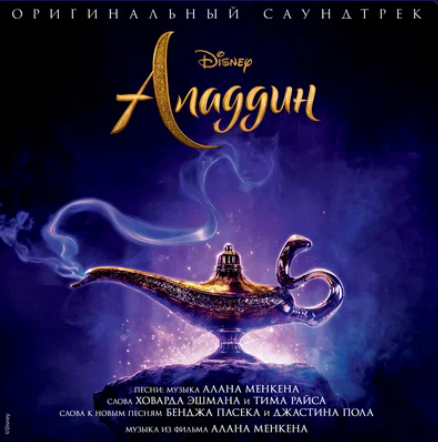
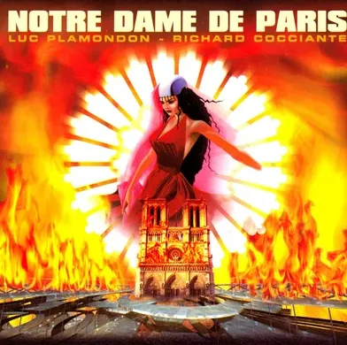

Добро пожаловать в каталог музыкальных композиций! Здесь вы можете найти информацию о песнях, их исполнителях и годах выпуска.
В нашем каталоге представлены разные музыкальные жанры: поп, рок, рэп и электронная музыка.
Музыкальные жанры
- Поп
- Рок
- Рэп
- Электронная музыка
Топ-3 музыкальных композиций
- Алексей Чумаков — Арабская ночь
- Garou, Daniel Lavoie, Patrick Fiori — Belle
- Любэ - Конь


Таблица музыкальных композиций
| Название | Исполнитель | Жанр | Год выпуска |
|---|---|---|---|
| Арабская ночь | Алексей Чумаков | Саундтрек | 2019 |
| Belle | Garou, Daniel Lavoie, Patrick Fiori | Мюзикл | 1998 |
| Конь | Любэ | Эстрада | 1994 |